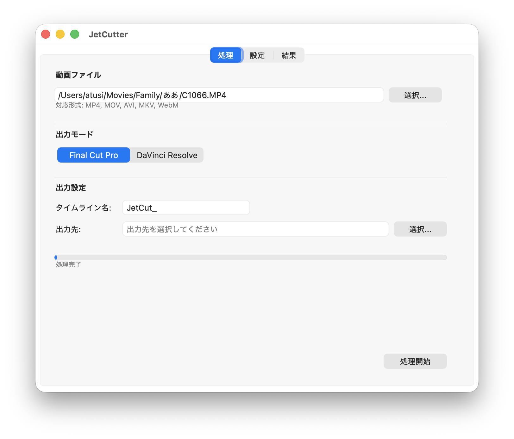
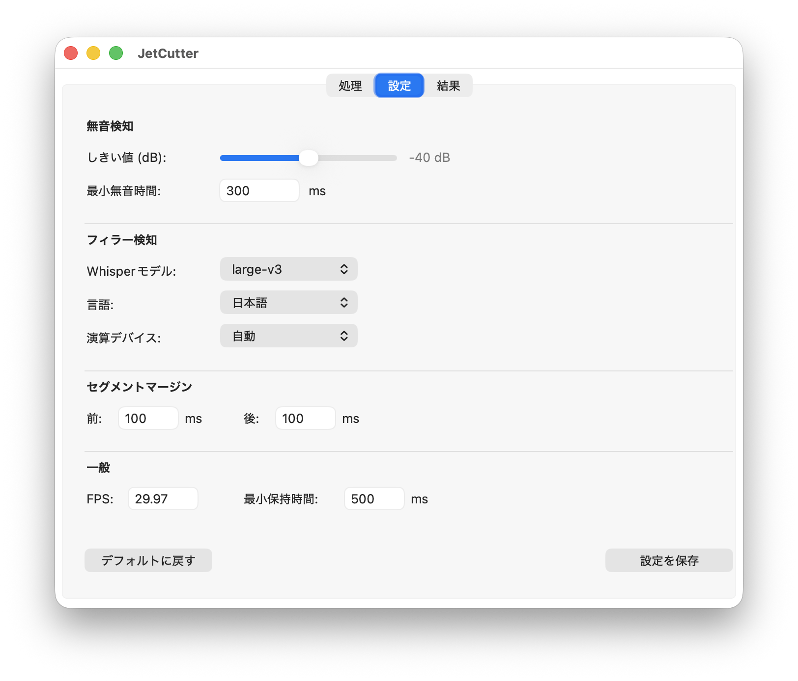
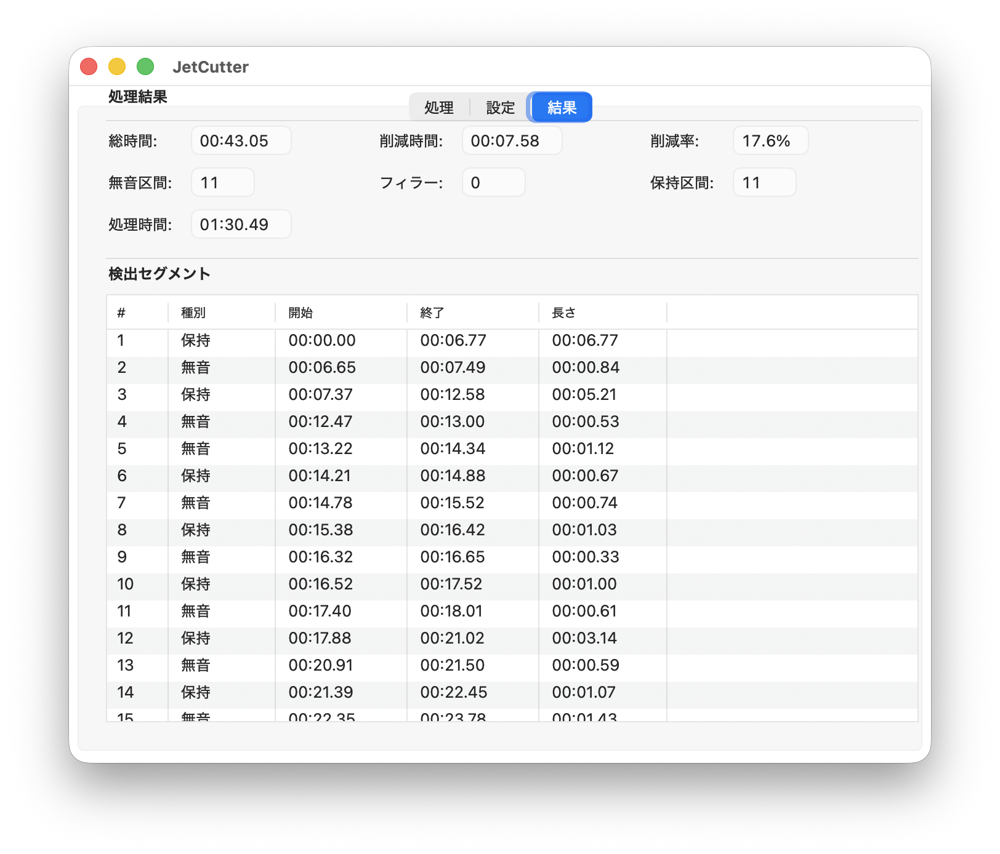

60分の動画編集。
波形を見ながら無音を探し、カット。
「あー」を見つけてカット。
「えっと」を見つけてカット。
気づけば30分。
同じ作業の繰り返し。
あなたの才能は、そんなことのためにあるのではありません。
JetCutterは、動画を投げ込むだけ。
あとは、あなたの創造性を発揮するだけ。
60分動画の下準備が30分から3分に。
月に10時間の編集なら、8時間を取り戻せます。
AIによる網羅的な検知で、
人間の目が見逃すフィラーも確実にキャッチ。
単調な作業はJetCutterに任せて、
演出・構成・ストーリーテリングに時間を使いましょう。
ファイルを選択し、出力先を指定して「処理開始」。
複雑な設定は必要ありません。

無音しきい値、Whisperモデル、マージン設定など
細かな調整も可能です。

検出されたセグメントの一覧、削減率、
処理時間をひと目で確認できます。

FCPXML v1.10形式で出力。
インポートするだけでタイムライン完成。
Scripting APIで直接連携。
※ Studio版が必要
git clone https://github.com/a2chub/jetcutter.git
uv pip install -e ".[gui]"
jetcutter gui
※ ffmpegが必要です: brew install ffmpeg
はい、JetCutterはMITライセンスのオープンソースソフトウェアです。完全無料でお使いいただけます。
現在はmacOS向けに最適化されています。CLIはクロスプラットフォームで動作しますが、GUIはmacOS専用です。
Final Cut Pro出力（FCPXML）は無料版でも利用可能です。DaVinci Resolve直接連携にはStudio版が必要です。
はい、config/fillers.yamlを編集することで、独自のフィラーワードを追加できます。